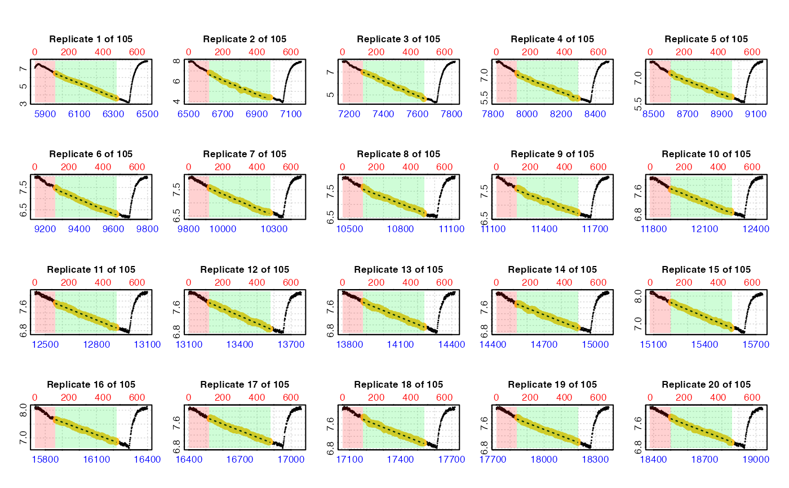
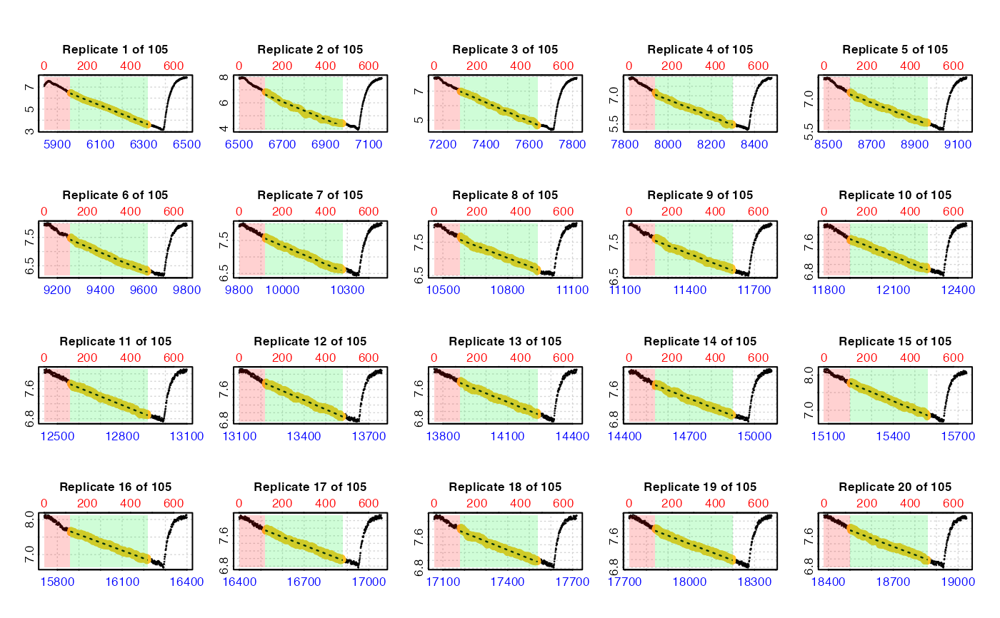

Extract rates from multiple replicates in intermittent-flow respirometry data
Source:R/calc_rate.int.R
calc_rate.int.Rdcalc_rate.int allows you to extract an oxygen uptake or production rate
from multiple replicates in intermittent-flow respirometry. It allows you to
easily use consistent selection parameters to extract a single rate from each
replicate, for example a specific time range or row range.
calc_rate.int(
x,
starts = NULL,
wait = NULL,
measure = NULL,
by = "row",
plot = TRUE,
...
)Arguments
- x
Object of class
inspectordata.frame. This is the timeseries of paired values of oxygen against time containing multiple replicates from which to calculate rates.- starts
Integer(s). Row locations or times of the start of each replicate. A single value input indicates a regular interval in rows or time units starting at the first row of the data in
x. If replicates do not cycle at a regular interval, a vector of the row or time of each replicate can be entered. The function assumes each replicate ends at the row preceding the start of the next replicate, or for the final replicate the final row of the dataset.- wait
Numeric. Rows or time period to exclude at the start of each replicate. Default is
NULLin which case no wait phase is applied. See Details.- measure
Numeric. Rows or time period over which to calculate rate in each replicate. Applied directly after
waitphase. Default isNULLin which case the entire replicate is used. See Details.- by
String.
"row"or"time". Defaults to"row". Method by whichstarts,waitandmeasureare applied.- plot
Logical. Default is
TRUE. Plots the results. See 'Plotting' section for details.- ...
Allows additional plotting controls to be passed, such as
type,pos,legend, andquiet.
Value
Output is a list object of class calc_rate.int containing a
calc_rate object for each replicate in $results. The output also
contains a $summary table which includes the full rate regression results
from each replicate with replicate number indicated by the $rep column.
Output also contains a $rate element which contains the rate values from
each replicate in order. The function call, inputs, and other metadata are
also included. Note, that if you have many replicates this object can be
rather large (several MB).
Details
calc_rate.int uses the starts input to subset each replicate. The wait
and measure inputs control which parts of each replicate data are excluded
and included from the rate calculation. It extracts a rate from each
replicate using these, and saves it and other data to a summary table.
The x input should be aninspect object. Alternatively, it can be a
two-column data frame containing paired values of time and oxygen from an
intermittent-flow experiment in columns 1 and 2 respectively (though we
always recommend processing such data in inspect() first). If a multiple
column dataset is entered as x the first two columns are selected by
default. If these are not the intended data use inspect to select the
correct time and oxygen columns.
Specifying replicate structure
The starts input specifies the locations of the start of each replicate in
the data in x. This can be in one of two ways:
A single numeric value specifying how replicates are spaced starting from the data in the first row. This option should only be used when replicates cycle at regular intervals. This can be a regular row or time interval, as specified via the
byinput. If the first replicate does not start at row 1, the data should be subset so that it does (seesubset_data()) and example here.A numeric vector of row locations or times, as specified via the
byinput, of the start of each individual replicate. The first replicate does not have to start at the first row of the data, and all data after the last entry is assumed to be part of the final replicate. RegularRsyntax such asseq(),1:10, etc. is also accepted, so can be used to specify both regular and irregular replicate spacing.
For both methods it is assumed each replicate ends at the row preceding the start of the next replicate, or in the case of the last replicate the final row of the dataset.
Specifying rate region
The wait and measure inputs are used to specify the region from which to
extract a rate and exclude flush periods. They can be entered as row
intervals or time values in the units of the input data. The wait phase
controls the amount of data at the start of each replicate to be ignored,
that is not used in rate calculations. The measure phase determines the
region after this over which a rate is calculated. There is no flush phase
input since this is assumed to be from the end of the measure phase to the
end of the replicate.
Both wait and measure can be entered in one of two ways:
Single numeric values specifying a row width or a time period, as specified via the
byinput. Use this if you want to use the samewaitandmeasurephases in every replicate, that is extract a rate from the same region of each.If
startsis a vector of locations of the start of each replicate, these inputs can also be vectors of equal length of row lengths or time periods as specified via thebyinput. This is only useful if you want to use differentwaitand/ormeasurephases in different replicates.
If wait = NULL no wait phase is applied. If measure = NULL the rate is
extracted from the start of the replicate or end of the wait phase to the
last row of the replicate. This will typically include the flush period, so
is rarely what you would want. Similarly if any measure input is beyond the
available values in the replicate the closest value (row or time) is used
instead, which again would typically be the last row of the replicate.
Example
See examples below for actual code, but here is a simple example. An experiment comprises replicates which cycle at ten minute intervals with data recorded every second. Therefore each replicate will be 600 rows long. Flushes of the respirometer take 3 minutes at the end of each replicate. We want to exclude the first 2 minutes (120 rows) of data in each, and measure an oxygen uptake rate for five minutes (300 rows), leaving the three minutes of flushing (180 rows) excluded. The inputs for this would be:
starts = 600, wait = 120, measure = 300, by = "row"
More details
Only a single rate can be extracted from each replicate. If for some reason
you need to extract multiple rates from single replicates use subset_data()
and calc_rate() which accepts multiple from and to inputs. Similarly,
the calc_rate method of by = "oxygen" is not supported in
calc_rate.int. See vignettes on the website for examples of alternative
ways of iterating calc_rate across multiple replicates if you need to get
around these constraints.
Plot
If plot = TRUE (the default), the result for each replicate is plotted on a
grid up to a maximum of 20. Which replicates are plotted can be selected
using the pos input (default is 1:20), either in the main function call or
when calling plot() on output objects.
There are three ways of plotting the results, which can be selected using the
type input:
type = "rep": The default. Each individual replicate is plotted with the rate region (i.e.measurephase) highlighted in yellow. Thewaitandmeasurephases are also highlighted with red and green backgrounds respectively. These are also labelled iflegend = TRUE.type = "full": Each replicate rate (i.e.measurephase) is highlighted in the context of the whole dataset. May be quite difficult to interpret if dataset is large.type = "cr": Plots individual replicate results ascalc_rateobjects.
For all types pos can be used to select which replicate(s) to plot.
S3 Generic Functions
Saved output objects can be used in the generic S3 functions plot(),
print(), summary(), and mean().
plot(): plots the result. See Plot section above.print(): prints the result of a single replicate, by default the first. Others can be printed by passing theposinput. e.g.print(x, pos = 2)summary(): prints summary table of all results and metadata, or the rows specified by theposinput. e.g.summary(x, pos = 1:5). The$repcolumn indicates the replicate number. The summary table can be exported as a separate data frame by passingexport = TRUE.mean(): calculates the mean of the rates from every replicate, or the rows specified by theposinput. e.g.mean(x, pos = 1:5)The mean can be exported as a numeric value by passingexport = TRUE.
More
For additional help, documentation, vignettes, and more visit the respR
website at https://januarharianto.github.io/respR/
Examples
# \donttest{
# Irregular replicate structure ------------------------------------------
# Prepare the data to use in examples
# Note in this dataset each replicate is a different length!
data <- intermittent.rd
# Convert time to minutes (to show different options below)
data[[1]] <- round(data[[1]]/60, 2)
# Inspect
urch_insp <- inspect(data)
#> inspect: Applying column default of 'time = 1'
#> inspect: Applying column default of 'oxygen = 2'
#> Warning: inspect: Time values are not evenly-spaced (numerically).
#> inspect: Data issues detected. For more information use print().
#>
#> # print.inspect # -----------------------
#> Time O2
#> numeric pass pass
#> Inf/-Inf pass pass
#> NA/NaN pass pass
#> sequential pass -
#> duplicated pass -
#> evenly-spaced WARN -
#>
#> Uneven Time data locations (first 20 shown) in column: Time
#> [1] 1 2 3 4 5 6 7 8 9 10 11 12 13 14 15 16 17 18 19 20
#> Minimum and Maximum intervals in uneven Time data:
#> [1] 0.01 0.02
#> -----------------------------------------
# Calculate rate across each entire replicate
# This leads to erroneous rates because the flush is included
calc_rate.int(urch_insp,
starts = c(1, 2101, 3901))
#> calc_rate.int: The `measure` input is NULL. Calculating rate to the end of the replicate.
#>
#> # plot.calc_rate.int # ------------------
#> plot.calc_rate.int: Plotting rate from all replicates ...
#> -----------------------------------------
#>
#> # print.calc_rate.int # -----------------
#> Replicate 1 of 3 :
#> Rate: -0.02226147
#>
#> To see other replicate results use 'pos' input.
#> To see full results use summary().
#> -----------------------------------------
# So instead we also specify a 'measure' phase
calc_rate.int(urch_insp,
starts = c(1, 2101, 3901),
measure = 1000)
#>
#> # plot.calc_rate.int # ------------------
#> plot.calc_rate.int: Plotting rate from all replicates ...
#> -----------------------------------------
#>
#> # print.calc_rate.int # -----------------
#> Replicate 1 of 3 :
#> Rate: -0.03718777
#>
#> To see other replicate results use 'pos' input.
#> To see full results use summary().
#> -----------------------------------------
# You can even specify different 'measure' phases in each rep
calc_rate.int(urch_insp,
starts = c(1, 2101, 3901),
measure = c(1500, 1200, 200))
#>
#> # plot.calc_rate.int # ------------------
#> plot.calc_rate.int: Plotting rate from all replicates ...
#> -----------------------------------------
#>
#> # print.calc_rate.int # -----------------
#> Replicate 1 of 3 :
#> Rate: -0.03582043
#>
#> To see other replicate results use 'pos' input.
#> To see full results use summary().
#> -----------------------------------------
# We usually don't want to use the start of a replicate just after the flush,
# so we specify a 'wait' phase. We can also specify 'starts', 'wait' and
# 'measure' in units of time instead of rows.
#
# By time
# (this time we save the result)
urch_res <- calc_rate.int(urch_insp,
starts = c(0, 35, 65), # start locations in minutes
wait = 2, # wait for 2 mins
measure = 10, # measure for 10 mins
by = "time")
#>
#> # plot.calc_rate.int # ------------------
#> plot.calc_rate.int: Plotting rate from all replicates ...
 #> -----------------------------------------
# Regular replicate structure --------------------------------------------
# If replicates cycle at regular intervals, 'starts' can be used to specify
# the spacing in rows or time, starting at row 1. Therefore data must be
# subset first so that the first replicate starts at row 1.
#
# Subset and inspect data
zeb_insp <- zeb_intermittent.rd %>%
subset_data(from = 5840,
to = 75139,
by = "row",
quiet = TRUE) %>%
inspect()
#> inspect: Applying column default of 'time = 1'
#> inspect: Applying column default of 'oxygen = 2'
#> inspect: No issues detected while inspecting data frame.
#>
#> # print.inspect # -----------------------
#> Time Oxygen
#> numeric pass pass
#> Inf/-Inf pass pass
#> NA/NaN pass pass
#> sequential pass -
#> duplicated pass -
#> evenly-spaced pass -
#>
#> -----------------------------------------
#> -----------------------------------------
# Regular replicate structure --------------------------------------------
# If replicates cycle at regular intervals, 'starts' can be used to specify
# the spacing in rows or time, starting at row 1. Therefore data must be
# subset first so that the first replicate starts at row 1.
#
# Subset and inspect data
zeb_insp <- zeb_intermittent.rd %>%
subset_data(from = 5840,
to = 75139,
by = "row",
quiet = TRUE) %>%
inspect()
#> inspect: Applying column default of 'time = 1'
#> inspect: Applying column default of 'oxygen = 2'
#> inspect: No issues detected while inspecting data frame.
#>
#> # print.inspect # -----------------------
#> Time Oxygen
#> numeric pass pass
#> Inf/-Inf pass pass
#> NA/NaN pass pass
#> sequential pass -
#> duplicated pass -
#> evenly-spaced pass -
#>
#> -----------------------------------------
 # Calculate a rate from same 6-minute region in every replicate.
# Replicates cycle at every 660 rows.
zeb_res <- calc_rate.int(zeb_insp,
starts = 660,
wait = 120, # exclude first 2 mins
measure = 360, # rate from 6 mins after 'wait'
plot = TRUE)
#>
#> # plot.calc_rate.int # ------------------
#> plot.calc_rate.int: Plotting rate from all replicates ...
#> plot.calc_rate.int: Plotting first 20 selected reps only. To plot others modify 'pos' input.

#> -----------------------------------------
# S3 functions ------------------------------------------------------------
# Outputs can be used in print(), summary(), and mean().
# 'pos' can be used to select replicate ranges
summary(zeb_res)
#>
#> # summary.calc_rate.int # ---------------
#> Summary of all replicate results:
#>
#> rep rank intercept_b0 slope_b1 rsq row endrow time endtime oxy endoxy rate.2pt rate
#> 1: 1 1 53.19727 -0.007846955 0.997 121 480 5960 6319 6.454643 3.568881 -0.008038333 -0.007846955
#> 2: 2 1 51.92618 -0.006842426 0.975 781 1140 6620 6979 6.821486 4.408525 -0.006721341 -0.006842426
#> 3: 3 1 53.61471 -0.006405674 0.994 1441 1800 7280 7639 6.990787 4.641354 -0.006544383 -0.006405674
#> 4: 4 1 42.13680 -0.004417965 0.989 2101 2460 7940 8299 7.160439 5.446070 -0.004775401 -0.004417965
#> 5: 5 1 40.02087 -0.003815901 0.989 2761 3120 8600 8959 7.310690 5.884345 -0.003973104 -0.003815901
#> ---
#> 101: 101 1 169.32106 -0.002245371 0.982 66121 66480 71960 72319 7.806886 6.940578 -0.002413114 -0.002245371
#> 102: 102 1 178.05763 -0.002345255 0.984 66781 67140 72620 72979 7.774163 6.875611 -0.002502929 -0.002345255
#> 103: 103 1 173.60535 -0.002263366 0.982 67441 67800 73280 73639 7.762485 6.942057 -0.002285314 -0.002263366
#> 104: 104 1 183.48426 -0.002376847 0.984 68101 68460 73940 74299 7.752016 6.930697 -0.002287798 -0.002376847
#> 105: 105 1 175.92423 -0.002254646 0.980 68761 69120 74600 74959 7.763168 6.957930 -0.002243004 -0.002254646
#> -----------------------------------------
mean(zeb_res, pos = 1:5)
#>
#> # mean.calc_rate.int # ------------------
#> Mean of rate results from entered 'pos' replicates:
#>
#> Mean of 5 replicate rates:
#> [1] -0.005865784
#> -----------------------------------------
# There are three ways by which the results can be plotted.
# 'pos' can be used to select replicates to be plotted.
#
# type = "rep" - the default. Each replicate plotted on a grid with rate
# region highlighted (up to a maximum of 20).
plot(urch_res)
#>
#> # plot.calc_rate.int # ------------------
#> plot.calc_rate.int: Plotting rate from all replicates ...
#> -----------------------------------------
# type = "full" - each replicate rate region plotted on entire data series.
plot(urch_res, pos = 1:2, type = "full")
#>
#> # plot.calc_rate.int # ------------------
#> plot.calc_rate.int: Plotting rate from selected replicates...
#> To plot others modify 'pos' input.
#> -----------------------------------------
# Of limited utility when datset is large
plot(zeb_res, pos = 10, type = "full")
#>
#> # plot.calc_rate.int # ------------------
#> plot.calc_rate.int: Plotting rate from selected replicates...
#> To plot others modify 'pos' input.
#> -----------------------------------------
# type = "cr" - the 'calc_rate' object for selected replicates in 'pos' is plotted
plot(urch_res, pos = 2, type = "cr")
#>
#> # plot.calc_rate.int # ------------------
#> plot.calc_rate.int: Plotting rate from selected replicates...
#> To plot others modify 'pos' input.
#> -----------------------------------------
# See vignettes on website for how to adjust and convert rates from calc_rate.int
# }
# Calculate a rate from same 6-minute region in every replicate.
# Replicates cycle at every 660 rows.
zeb_res <- calc_rate.int(zeb_insp,
starts = 660,
wait = 120, # exclude first 2 mins
measure = 360, # rate from 6 mins after 'wait'
plot = TRUE)
#>
#> # plot.calc_rate.int # ------------------
#> plot.calc_rate.int: Plotting rate from all replicates ...
#> plot.calc_rate.int: Plotting first 20 selected reps only. To plot others modify 'pos' input.

#> -----------------------------------------
# S3 functions ------------------------------------------------------------
# Outputs can be used in print(), summary(), and mean().
# 'pos' can be used to select replicate ranges
summary(zeb_res)
#>
#> # summary.calc_rate.int # ---------------
#> Summary of all replicate results:
#>
#> rep rank intercept_b0 slope_b1 rsq row endrow time endtime oxy endoxy rate.2pt rate
#> 1: 1 1 53.19727 -0.007846955 0.997 121 480 5960 6319 6.454643 3.568881 -0.008038333 -0.007846955
#> 2: 2 1 51.92618 -0.006842426 0.975 781 1140 6620 6979 6.821486 4.408525 -0.006721341 -0.006842426
#> 3: 3 1 53.61471 -0.006405674 0.994 1441 1800 7280 7639 6.990787 4.641354 -0.006544383 -0.006405674
#> 4: 4 1 42.13680 -0.004417965 0.989 2101 2460 7940 8299 7.160439 5.446070 -0.004775401 -0.004417965
#> 5: 5 1 40.02087 -0.003815901 0.989 2761 3120 8600 8959 7.310690 5.884345 -0.003973104 -0.003815901
#> ---
#> 101: 101 1 169.32106 -0.002245371 0.982 66121 66480 71960 72319 7.806886 6.940578 -0.002413114 -0.002245371
#> 102: 102 1 178.05763 -0.002345255 0.984 66781 67140 72620 72979 7.774163 6.875611 -0.002502929 -0.002345255
#> 103: 103 1 173.60535 -0.002263366 0.982 67441 67800 73280 73639 7.762485 6.942057 -0.002285314 -0.002263366
#> 104: 104 1 183.48426 -0.002376847 0.984 68101 68460 73940 74299 7.752016 6.930697 -0.002287798 -0.002376847
#> 105: 105 1 175.92423 -0.002254646 0.980 68761 69120 74600 74959 7.763168 6.957930 -0.002243004 -0.002254646
#> -----------------------------------------
mean(zeb_res, pos = 1:5)
#>
#> # mean.calc_rate.int # ------------------
#> Mean of rate results from entered 'pos' replicates:
#>
#> Mean of 5 replicate rates:
#> [1] -0.005865784
#> -----------------------------------------
# There are three ways by which the results can be plotted.
# 'pos' can be used to select replicates to be plotted.
#
# type = "rep" - the default. Each replicate plotted on a grid with rate
# region highlighted (up to a maximum of 20).
plot(urch_res)
#>
#> # plot.calc_rate.int # ------------------
#> plot.calc_rate.int: Plotting rate from all replicates ...
#> -----------------------------------------
# type = "full" - each replicate rate region plotted on entire data series.
plot(urch_res, pos = 1:2, type = "full")
#>
#> # plot.calc_rate.int # ------------------
#> plot.calc_rate.int: Plotting rate from selected replicates...
#> To plot others modify 'pos' input.
#> -----------------------------------------
# Of limited utility when datset is large
plot(zeb_res, pos = 10, type = "full")
#>
#> # plot.calc_rate.int # ------------------
#> plot.calc_rate.int: Plotting rate from selected replicates...
#> To plot others modify 'pos' input.
#> -----------------------------------------
# type = "cr" - the 'calc_rate' object for selected replicates in 'pos' is plotted
plot(urch_res, pos = 2, type = "cr")
#>
#> # plot.calc_rate.int # ------------------
#> plot.calc_rate.int: Plotting rate from selected replicates...
#> To plot others modify 'pos' input.
#> -----------------------------------------
# See vignettes on website for how to adjust and convert rates from calc_rate.int
# }